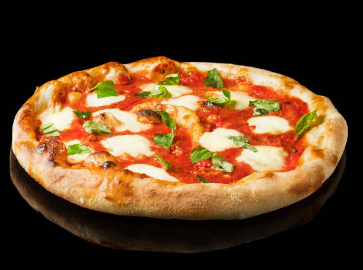

Bienvenidos
Esta interfaz servira como ejemplo practico sobre como cambiar dinamicamente la apariencia de la pagina de una web usandp JS para seleccionar estilos CSS.
Esta interfaz servira como ejemplo practico sobre como cambiar dinamicamente la apariencia de la pagina de una web usandp JS para seleccionar estilos CSS.
